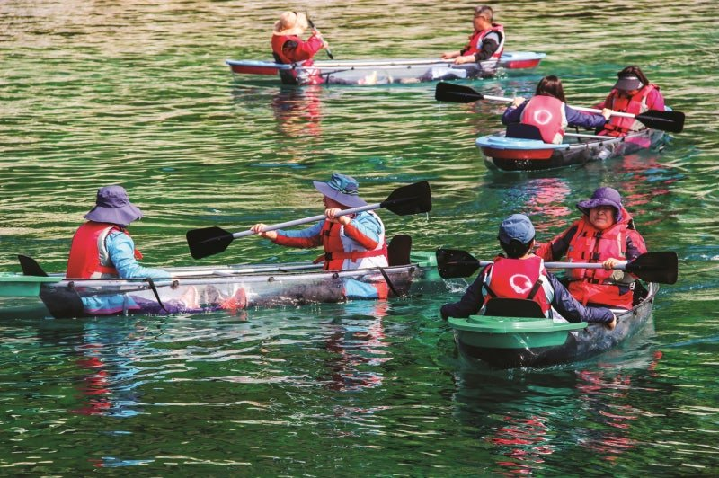
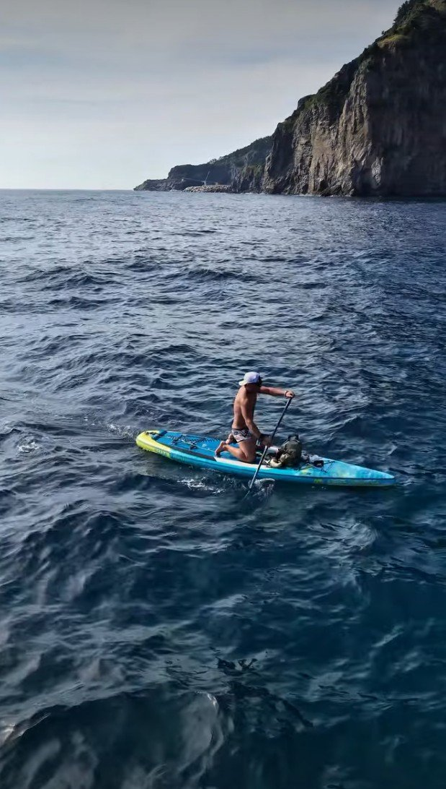
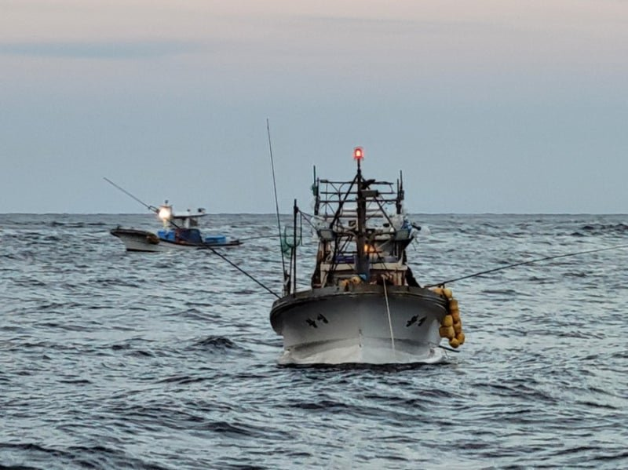
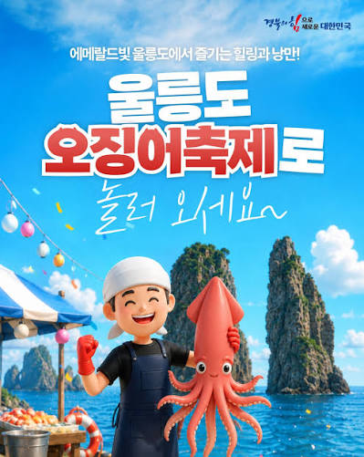
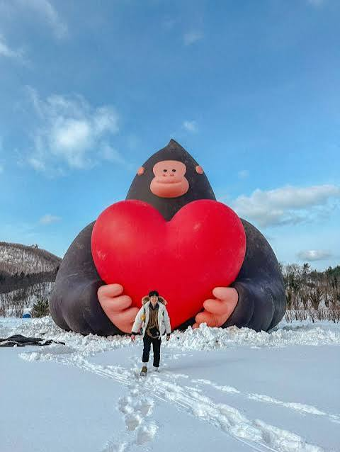
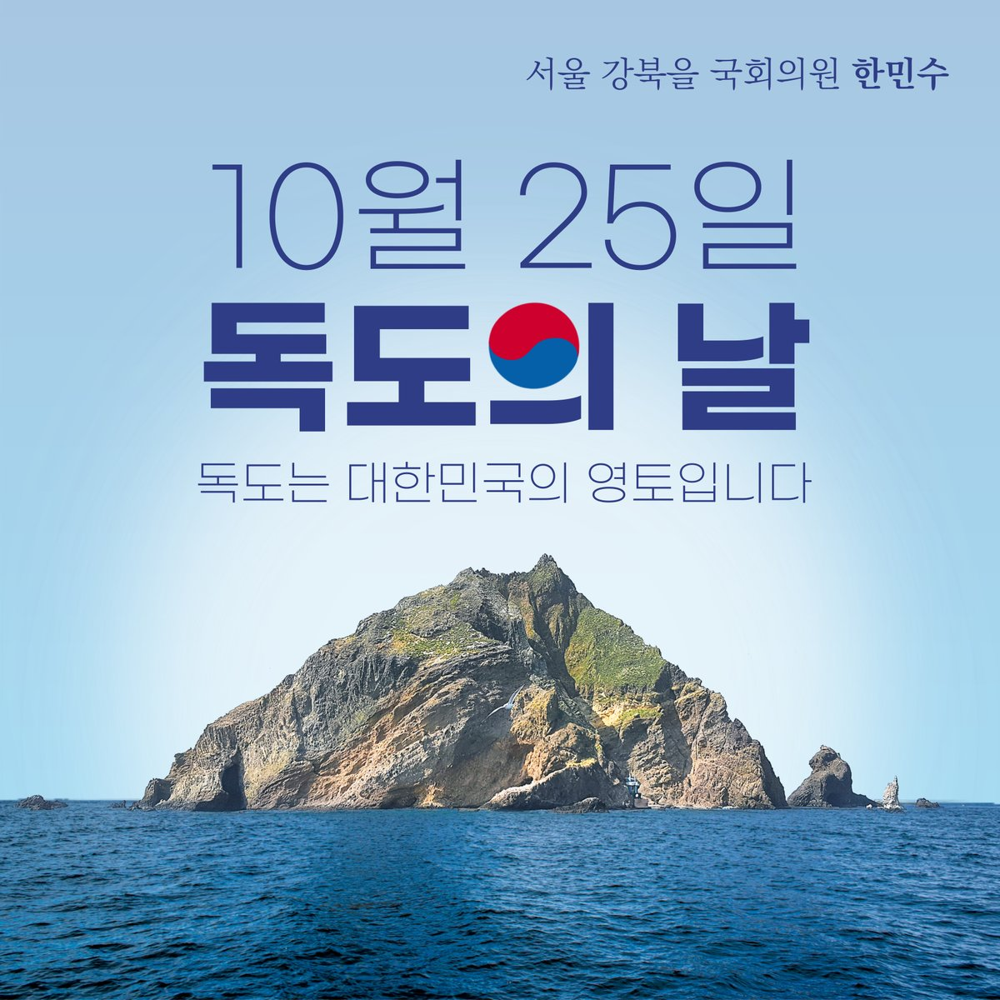
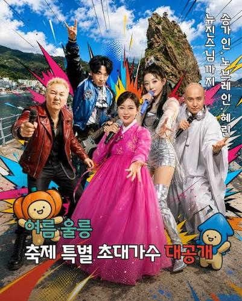

걷지 않아도 절경 속으로. 울릉 여행의 하이라이트 이동수단이에요
에메랄드빛 울릉 바다에서 즐기는 물놀이. 6~9월 저동·천부·학포 일대에서 운영해요




바다 옆, 숲 속, 정상 위 — 취향대로 골라 걷는 울릉 트레킹
계절마다 섬의 표정이 바뀝니다. 여행 시기와 겹치는 축제가 있는지 확인해 보세요

여름
겨울
10월
연중영향력 높은 인플루언서가 소개하는 울릉도 즐길거리예요


 ▶
▶ ▶
▶ ▶
▶ ▶
▶